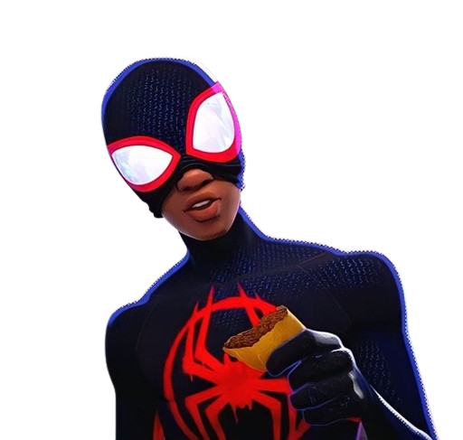

Conheça o Amigo da vizinhaça

Beleza, vamos lá, mais uma vezinha. Agora é pra valer. Sério. Meu nome é Miles Morales. Eu fui picado por uma aranha radioativa, e por dois dias, eu fui o primeiro e único Homem-Aranha. O resto vocês já sabem. Eu terminei minha redação, salvei um monte de gente, bati num drone, fiz isso com meu pai, me apresentei ao meu colega de quarto, colei um adesivo onde meu pai nunca vai descobrir e quando eu to sozinho, e ninguém entende o que eu to passando, eu me lembro dos meus amigos que entendem. Nunca pensei que conseguiria fazer nada disso, mas consigo. Qualquer um pode usar a máscara. Você pode usar máscara. Se você não sabia disso, agora sabe. Eu sou o Homem-Aranha e eu não sou o único. Nem de longe.